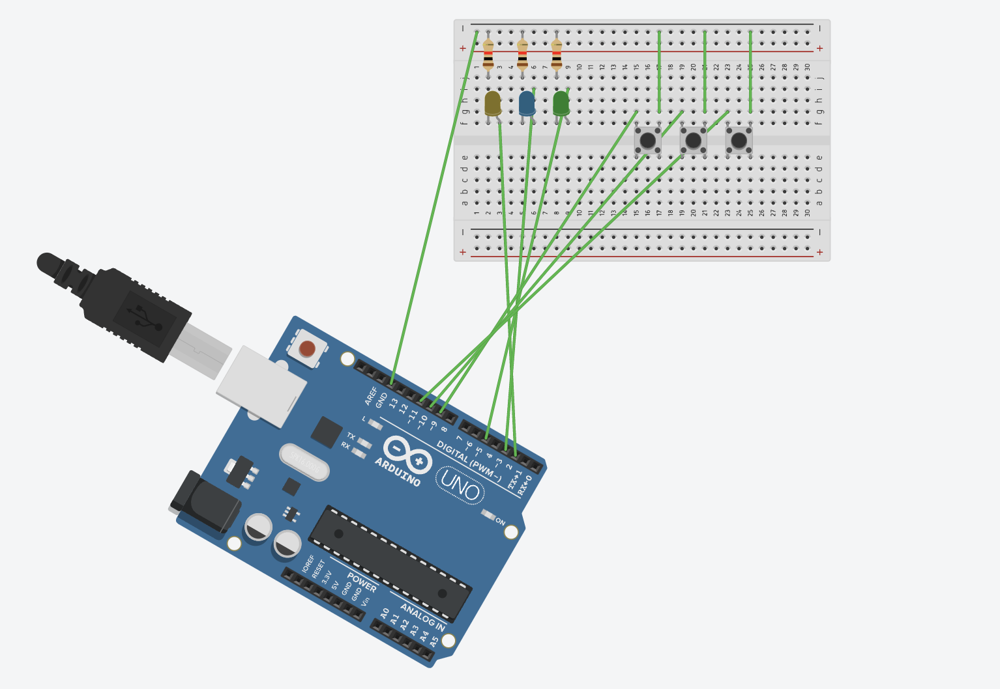
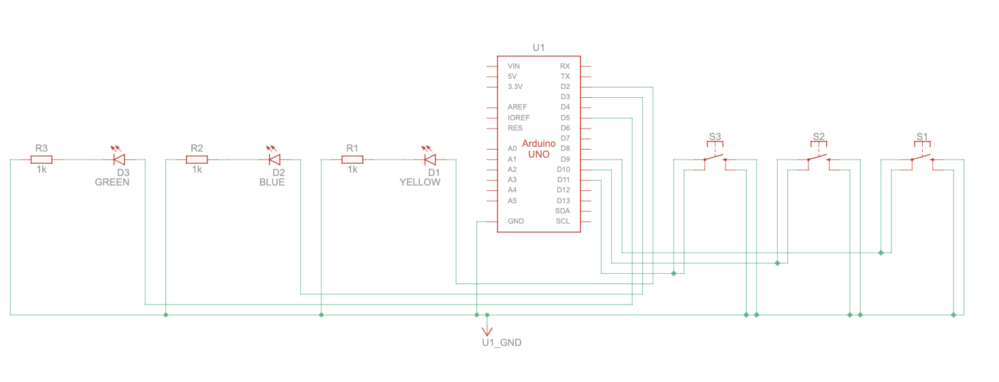

<div class="textcontainer">
<p class="margin"> </p>
<h3>Week 4: Microcontroller Programming</h3>
<h4>Assignment: Make an Arduino Do Something</h4>
After learning about the H-bridge and PWM, I wanted to try using the Arduino to make the motor on my skateboard change directions so it can do more than just go forward. The plan is to write a simple program to activate the motor for 3 seconds, then have it change directions and go for another 3 seconds. I'm using <a href="tinkercad.com">TinkerCad's circuit program online</a> to model the circuit and code before I go into the lab and put it together physically since it's a bit easier to debug. As of Thursday I'm still in this phase and practicing my Arduino coding.
<br>
Update: I decided to do something more along the lines of my final project, where a button controls the LED states of a few LEDs. I made a super simple circuit of three LED lights, one yellow, blue, and green connected to digital pins, and with three buttons connected to digital pins. See below for the circuit and demonstration:
<div class="flexrow">
<img src="./circuit.jpeg" width="35%">
</div>
<div class="flexrow">
<video width="50%" autoplay muted>
<source src="./circuitLEDs.MOV" type="video/mp4">
</video>
</div>
Here is the code I used:
<iframe src="https://app.arduino.cc/sketches/47947de1-36b6-4297-953b-a5b52e32df61?view-mode=embed" style="height:510px;width:100%;margin:10px 0" frameborder=0 /></iframe>
Here is tinkercad representation to show the connections, and the circuit schematic it generated:
<div class="flexrow">


</div>
</div>